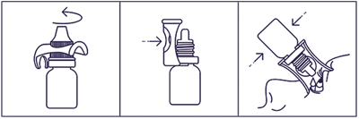

|
 |
| ТРИЛАКТАН® (TRILAKTAN) latanoprost капли глазные | ||||||
|
Клинико-фармакологическая группа: Противоглаукомный препарат - синтетический аналог простагландина F2α Номер и дата регистрации: ЛП-004254 от 19.04.17 Код ATX: S01EE01 |
Владелец регистрационного удостоверения: зарегистрировано и произведено Представительство: | |||||
Форма выпуска, состав и упаковка Капли глазные в виде прозрачной, бесцветной жидкости.
Вспомогательные вещества: бензалкония хлорид - 0.2 мг, натрия хлорид - 4.1 мг, натрия дигидрофосфата моногидрат - 4.6 мг, натрия гидрофосфат безводный - 4.74 мг, вода д/и - до 1 мл. 2.5 мл - флаконы из полиэтилена низкой плотности× (1) с капельницей - пачки картонные. × с упорным устройством или без него. | ||||||
| ||||||
Описание препарата основано на официально утвержденной инструкции по применению и утверждено компанией-производителем для издания 2023 г. | ||||||
Фармакологическое действие |
Фармакокинетика |
Показания |
Режим дозирования |
Побочное действие |
Противопоказания |
Беременность и лактация |
Особые указания |
Передозировка |
Лекарственное взаимодействие |
Условия хранения и сроки годности |
Условия реализации
Фармакологическое действие
Латанопрост - аналог простагландина F2α - является селективным агонистом рецепторов FP (простагландина F) и снижает внутриглазное давление (ВГД) за счет увеличения оттока водянистой влаги, главным образом увеосклеральным путем, а также через трабекулярную сеть. Снижение ВГД начинается приблизительно через 3-4 ч после введения препарата, максимальный эффект наблюдается через 8-12 ч, действие сохраняется в течение не менее 24 ч. Установлено, что латанопрост не оказывает существенного влияния на продукцию водянистой влаги и на гематоофтальмический барьер. При применении в терапевтических дозах латанопрост не оказывает значимого фармакологического эффекта на сердечно-сосудистую и дыхательную системы. Фармакокинетика
Латанопрост (молекулярная масса 432.58) представляет собой про-лекарство, этерифицированное изопропиловой группой, неактивен; после гидролиза до кислотной формы становится биологически активным. Всасывание и распределение Про-лекарство хорошо всасывается через роговицу и полностью гидролизуется при попадании в водянистую влагу. Исследования у человека показали, что Cmax в водянистой влаге достигается через 2 ч после инстилляции. После инстилляции обезьянам латанопрост распределяется преимущественно в передней камере глаза, конъюнктиве и веках. Лишь небольшое количество латанопроста достигает задней камеры глаза. Метаболизм и выведение Активная форма латанопроста практически не метаболизируется в глазу, однако подвергается биотрансформации в печени. Т1/2 из плазмы составляет 17 мин. Исследования на животных показали, что основные метаболиты (1,2-динор- и 1,2,3,4-тетранорметаболиты) не обладают (или обладают низкой) биологической активностью и выводятся преимущественно с мочой. Фармакокинетика у особых групп пациентов Дети. Экспозиция латанопроста приблизительно в 2 раза выше у детей в возрасте от 3 до 12 лет по сравнению с взрослыми пациентами и в 6 раз выше у детей в возрасте младше 3 лет. Однако профиль безопасности препарата не отличается у детей и взрослых. Время достижения Cmax кислоты латанопроста в плазме крови составляет 5 мин для всех возрастных групп. Т1/2 кислоты латанопроста у детей такой же, как и у взрослых. В равновесной концентрации не происходит кумуляции кислоты латанопроста в плазме крови. Показания
Режим дозирования
Взрослые (в т.ч. пациенты пожилого возраста) Назначают по 1 капле в пораженный глаз(а) 1 раз/сут. Оптимальный эффект достигается при применении препарата вечером. Не следует осуществлять инстилляцию препарата чаще, чем 1 раз/сут, поскольку показано, что более частое введение снижает гипотензивный эффект. При пропуске одной дозы лечение продолжают по обычной схеме. Как при применении любых глазных капель, с целью снижения возможного системного эффекта препарата, сразу после инстилляции каждой капли рекомендуется в течение 1 мин надавливать на нижнюю слезную точку, расположенную у внутреннего угла глаза на нижнем веке. Эту процедуру необходимо выполнять непосредственно после инстилляции. Перед инстилляцией необходимо вынуть контактные линзы и установить их не раньше чем через 15 мин после введения (см. также раздел "Особые указания"). Если одновременно необходимо применять другие глазные капли, их применение следует разграничить 5-минутным интервалом. Дети Латанопрост применяют у детей в той же дозе, что и у взрослых. Данные о применении препарата у недоношенных (гестационный возраст <36 недель) отсутствуют. Данные у детей <1 года сильно ограничены. Порядок работы с упором  1. Достать упор и флакон из пачки. 2. Открыть флакон с помощью упора. 3. Закрепить упор на горлышке флакона. 4. Установить упор на веко так, чтобы капельница находилась напротив глазного яблока, закапать необходимое количество препарата. 5. Снять упор с горлышка флакона. 6. Закрыть флакон крышкой. Побочное действие
Большинство нежелательных реакций отмечались со стороны органа зрения. В открытом 5-летнем исследовании безопасности у 33% развилась пигментация радужной оболочки (см. раздел "Особые указания"). Прочие нежелательные реакции со стороны органа зрения, как правило, транзиторны и отмечаются непосредственно после инстилляции. Градация нежелательных реакций по частоте встречаемости осуществлялась следующим образом: очень часто (≥1/10); часто (≥1/100, <1/10); нечасто (≥1/1000, <1/100); редко (≥1/10000, <1/1000); очень редко (<1/10000); частота неизвестна (на основе имеющихся данных частоту оценить невозможно). Инфекции и инвазии: частота неизвестна - герпетический кератит. Со стороны органа зрения: очень часто - гиперпигментация радужной оболочки, гиперемия конъюнктивы, раздражение глаз от легкой до средней степени (чувство жжения, ощущение песка в глазах, зуд, покалывание и ощущение инородного тела), изменение ресниц (увеличение длины, толщины, количества и пигментации); часто - преходящие точечные эрозии эпителия (преимущественно бессимптомные), блефарит, боль в глазу; нечасто - отек век, сухость слизистой оболочки глаза, кератит, затуманивание зрения, конъюнктивит; редко - ирит/увеит (преимущественно у предрасположенных пациентов), отек макулы, отек век, отек роговицы, эрозия роговицы, периорбитальный отек, потемнение кожи век, реакции со стороны кожи век, изменение направления роста ресниц, утолщение, потемнение и удлинение ресниц, дистихиаз, фотофобия; очень редко - изменения в периорбитальной области и в области ресниц, приводящие к углублению борозды верхнего века; частота неизвестна - киста радужной оболочки, псевдопемфигоид конъюнктивы. Со стороны нервной системы: частота неизвестна - головокружение, головная боль. Со стороны сердечно-сосудистой системы: нечасто - стенокардия, ощущение сердцебиения; частота неизвестна - нестабильная стенокардия. Со стороны дыхательной системы: редко - бронхоспазм (в т.ч. обострение заболевания у пациентов с бронхиальной астмой в анамнезе), одышка. Со стороны кожи и подкожных тканей: нечасто - сыпь; редко - кожный зуд; очень редко - потемнение кожи век и местные кожные реакции на веках. Со стороны костно-мышечной системы: частота неизвестна - миалгия, артралгия. Общие нарушения и местные реакции: очень редко - боль в груди. Противопоказания
С осторожностью Афакия, псевдоафакия с разрывом задней капсулы хрусталика; пациенты с факторами риска макулярного отека (при лечении латанопростом описаны случаи развития макулярного отека, в т.ч. цистоидного); воспалительная, неоваскулярная глаукома (из-за отсутствия достаточного опыта применения препарата); бронхиальная астма; герпетический кератит в анамнезе. Следует избегать применения препарата у пациентов с активной формой герпетического кератита и рецидивирующим герпетическим кератитом, особенно связанным с приемом аналогов простагландина F2α. Препарат следует применять с осторожностью у пациентов с факторами риска развития ирита/увеита. Существуют ограниченные данные о применении препарата у пациентов, которым планируется оперативное вмешательство по поводу катаракты. В связи с этим у данной группы больных препарат необходимо применять с осторожностью. Применение при беременности и кормлении грудью
Беременность Безопасность применения латанопроста во время беременности у человека не установлена. Латанопрост может оказывать токсические эффекты на течение беременности, плод и новорожденного. Применение во время беременности противопоказано. Период грудного вскармливания Латанопрост и его метаболиты могут проникать в грудное молоко. Применение во время грудного вскармливания противопоказано. При необходимости применения препарата грудное вскармливание необходимо прекратить. Фертильность Влияния латанопроста на мужскую и женскую фертильность в исследованиях на животных не обнаружено. Особые указания
Латанопрост может постепенно изменить цвет глаз за счет увеличения содержания коричневого пигмента в радужке. До начала лечения пациентов следует проинформировать о возможном необратимом изменении цвета глаз. Применение лекарственного препарата на одном глазу может вызвать необратимую гетерохромию. Такое изменение цвета глаз преимущественно отмечалось у пациентов с неравномерно окрашенными радужками, а именно: каре-голубыми, серо-карими, желто-карими и зелено-карими. В исследованиях латанопроста потемнение, как правило, начиналось в течение первых 8 месяцев лечения, редко - в течение второго и третьего года и не отмечалось по истечении четырех лет лечения. Прогрессирование пигментации радужки снижалось со временем и стабилизировалось через 5 лет. Данные об усилении пигментации в течение 5 лет отсутствуют. В открытом 5-летнем исследовании безопасности латанопроста у 33% пациентов развивалась пигментация радужки (см. раздел "Побочное действие"). В большинстве случаев изменение цвета радужки было незначительным и, зачастую, клинически не выявлялось. Частота встречаемости колебалась от 7% до 85% у пациентов с неодинакового цвета радужками, преобладая у пациентов с желто-карими радужками. Изменения у пациентов с равномерно окрашенными радужками голубого цвета не наблюдались, в редких случаях изменения отмечались при равномерно окрашенных радужках серого, зеленого и карего цвета. Изменение цвета глаз обусловлено увеличением содержания меланина в стромальных меланоцитах радужки, а не увеличением числа самих меланоцитов. В типичных случаях коричневая пигментация появляется вокруг зрачка и концентрически распространяется на периферию радужки. При этом вся радужка или ее части приобретают карий цвет. После отмены терапии дальнейшая пигментация не отмечалась. По имеющимся клиническим данным изменение цвета не было связано с какими-либо симптомами или патологическими нарушениями. Препарат не оказывает влияния на невусы и лентиго радужной оболочки. Согласно результатам 5-летних клинических исследований, накопления пигмента в склеророговичной трабекулярной сети или иных отделах передней камеры глаза не отмечено. Показано, что потемнение радужки не приводит к нежелательным клиническим последствиям, поэтому применение латанопроста при возникновении такого потемнения можно продолжить. Тем не менее, такие пациенты должны находиться под регулярным наблюдением и, в зависимости от клинической ситуации, лечение может быть прекращено. Опыт применения латанопроста в терапии закрытоугольной и врожденной глаукомы, пигментной глаукомы, открытоугольной глаукомы у пациентов с псевдоафакией ограничен. Отсутствуют сведения о применении латанопроста в лечении вторичной глаукомы вследствие воспалительных заболеваний глаз и неоваскулярной глаукомы. Латанопрост не оказывает влияния на величину зрачка. В связи с тем, что сведения о применении латанопроста в послеоперационном периоде экстракции катаракты ограничены, следует соблюдать осторожность при применении препарата у этой категории пациентов. Следует соблюдать осторожность при применении латанопроста пациентами с герпетическим кератитом в анамнезе. При остром герпетическом кератите, а также в случае наличия анамнестических сведений о хроническом рецидивирующем герпетическом кератите, необходимо избегать назначения латанопроста. Макулярный отек, в т.ч. кистозный, отмечался в период терапии латанопростом преимущественно у пациентов с афакией, псевдоафакией, разрывом задней капсулы хрусталика, или у пациентов с факторами риска развития кистозного макулярного отека (в частности, при диабетической ретинопатии и окклюзии вен сетчатки). Следует соблюдать осторожность при применении латанопроста у пациентов с афакией, псевдоафакией с разрывом задней капсулы или переднекамерными интраокулярными линзами, а также у пациентов с известными факторами риска кистозного отека макулы. Следует соблюдать осторожность при применении латанопроста у пациентов с факторами риска развития ирита/увеита. Опыт применения латанопроста пациентами с бронхиальной астмой ограничен, но в ряде случаев в пострегистрационном периоде отмечались обострение течения астмы и/или появления одышки. Следует соблюдать осторожность при применении латанопроста у этой категории пациентов (см. также раздел "Побочное действие"). Отмечались случаи потемнения кожи периорбитальной области, которые у ряда пациентов носили обратимый характер при продолжении терапии латанопростом. Латанопрост может вызывать постепенные изменения ресниц и пушковых волос, такие как удлинение, утолщение, усиление пигментации, увеличение густоты и изменение направления роста ресниц. Изменения ресниц были обратимы и проходили после прекращения терапии. Трилактан® содержит бензалкония хлорид, часто используемый в качестве консерванта в офтальмологических лекарственных препаратах. Бензалкония хлорид может вызывать раздражения глаз, точечную кератопатию и/или токсическую язвенную кератопатию, а также абсорбироваться мягкими контактными линзами и обесцвечивать их. Требуется тщательный мониторинг состояния пациентов с синдромом "сухого глаза" или других заболеваний роговицы при длительном применении латанопроста. Перед применением препарата необходимо вынуть контактные линзы и снова установить их не ранее чем через 15 мин после инстилляции (см. также раздел "Режим дозирования"). Использование в педиатрии Сведения об эффективности и безопасности применения латанопроста у детей в возрасте до 1 года ограничены. Отсутствует опыт применения препарата у недоношенных детей (гестационный возраст менее 36 недель). Сведения о безопасности долгосрочного применения латанопроста у детей отсутствуют. При первичной врожденной глаукоме у детей от 0 до 3 лет стандартным методом лечения остается хирургическое вмешательство (гониотомия/трабекулотомия). Влияние на способность к управлению транспортными средствами и механизмами Как и при применении других офтальмологических лекарственных препаратов, возможно временное нарушение зрения; до его восстановления управлять транспортными средствами или работать с механизмами не рекомендуется. Передозировка
Помимо раздражения слизистой оболочки глаз, гиперемии конъюнктивы или эписклеры, другие нежелательные изменения со стороны органа зрения при передозировке латанопроста неизвестны. При случайном приеме латанопроста внутрь следует учитывать следующую информацию: один флакон с 2.5 мл раствора содержит 125 мкг латанопроста. Более 90% препарата метаболизируется при "первом прохождении" через печень. В/в инфузия в дозе 3 мкг/кг у здоровых добровольцев не вызывала каких-либо симптомов, однако при введении дозы 5.5-10 мкг/кг наблюдались тошнота, боль в животе, головокружение, утомляемость, приливы и потливость. У больных бронхиальной астмой средней степени тяжести введение латанопроста в глаза в дозе, в 7 раз превышающей терапевтическую, не вызывало бронхоспазма. Лечение: в случае передозировки проводят симптоматическое лечение. Лекарственное взаимодействие
При одновременном закапывании в глаза двух аналогов простагландинов описано парадоксальное повышение ВГД, поэтому одновременное применение двух и более простагландинов, их аналогов или производных не рекомендуется. Фармацевтически несовместим с глазными каплями, содержащими тиомерсал - преципитация. |
||||||
Вернуться наверх |
||||||
Copyright © Справочник Видаль «Лекарственные препараты в России», Москва, Россия